VK ARCADE
Now Playing
The main cabinets.
 🧠 talks back
🧠 talks back
🍋lemon
LLM-driven · pixel artSomeone hasn't left their room in a while. You are the small voice inside them that still wants to. Be patient, be kind — a real language model plays the other side, and every run goes differently.
▶ PRESS START 🎧 play some music
🎧 play some music
🎶anubhav
web audio · eight visualizersPlay music near it — speakers, or another tab — and watch it breathe. Eight ways of seeing sound: Chladni sand, Fourier epicycles, a pitch helix, a low-poly shoal that swims to the spectrum. Nothing is recorded or uploaded.
▶ PRESS START 💬 free · no login
💬 free · no login
✳️Ananta
gita → stoics · LLM cascadeAsk anything you'd ask a wise friend. Answers draw on the Gita, the Mahabharata, Homer, the Greek tragedians, Plato, Aristotle and the Stoics — honestly, tensions included. Runs entirely on free tiers.
▶ PRESS START 📱 2–4 players, one phone
📱 2–4 players, one phone
🐦Chidiya Udd
hinglish · multi-touch · online roomsThe playground classic: finger down, and lift it only when the thing actually flies. Chidiya udd? Udd. Gaay udd? Beta bye-bye. Solo against a computer caller, 2–4 players around one phone, or online rooms with a code.
▶ PRESS START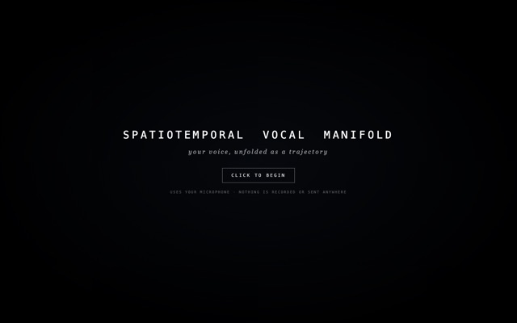
🎤 allow microphone🗣️Vocal Manifold
live MFCC · online PCASpeak, and your voice unfolds as a drifting point-cloud manifold — 40 real cepstral coefficients per frame, projected through a PCA that learns you as you talk. Nothing is recorded or uploaded.
▶ PRESS START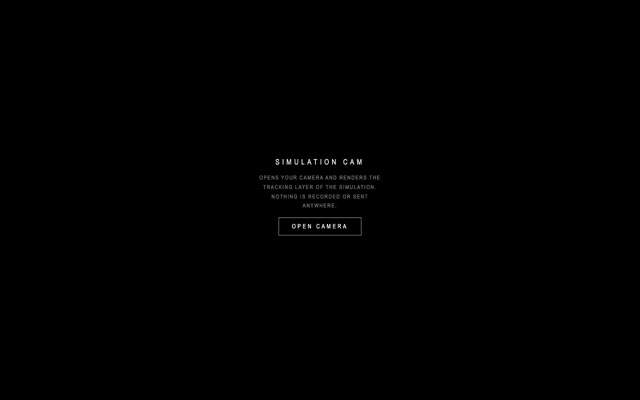
📷 allow camera🧿Simulation Cam
motion tracking · glitch overlayOpens your camera and renders the tracking layer of the simulation — incrementing IDs, boxes, and a web of lines chasing whatever moves. Nothing is recorded or uploaded.
▶ PRESS START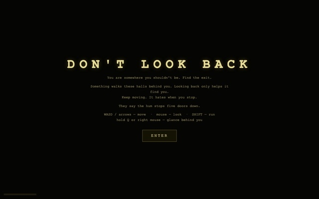
🎧 sound on👁️Don't Look Back
raycaster · procedural mazeA first-person crawl through the backrooms. Find the exit before the thing behind you does — and whatever you do, don't stare at it too long. New maze every death.
▶ PRESS START 🖥️ best on desktop
🖥️ best on desktop
🤠The Iron Horse Hold-Up
WebGL · zero librariesA wild-west train heist rendered in raw WebGL — shaders, smoke, and one very determined bandit. A single HTML file, no build step, runs offline.
▶ PRESS START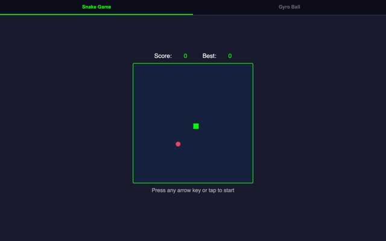
📱 grab your phone🐍Gyro Games
tilt controls · real physicsSnake and Gyro Ball, played by physically tilting your phone. The ball bounces with real physics; the snake judges your wrist stability.
▶ PRESS START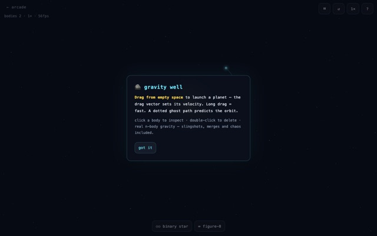
🖥️ best on desktop🪐Gravity Well
n-body physics · canvasDrag to fling planets around a star and watch real n-body gravity do the rest — orbits, slingshots, and the occasional tragic collision.
▶ PRESS START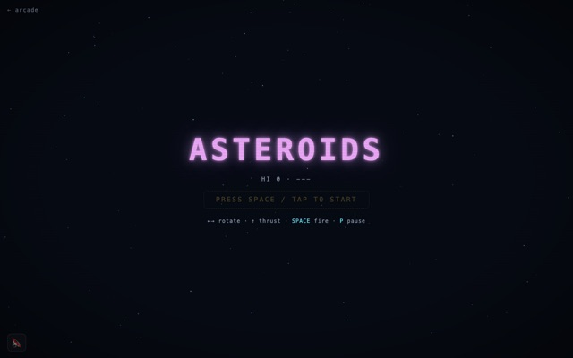
🖥️ arrows + space☄️Asteroids
1979 classic · neon vectorsThe 1979 classic redrawn in neon — thrust, spin, and shoot rocks into smaller rocks until the screen runs out of them.
▶ PRESS START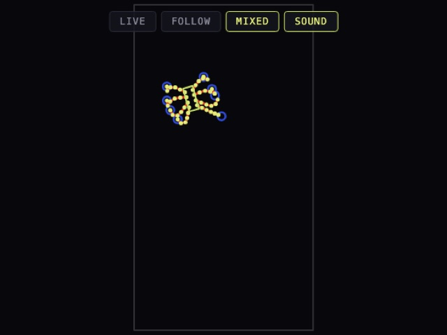
🖱️ move your mouse🕷️Stick Spider
FABRIK IK · procedural gaitAn eight-legged IK rig that wanders on its own, chases your cursor, and gets visibly bored when you stop moving. Lévy darts, Markov moods, one tap per footfall.
▶ PRESS STARTRender Tests
Look-development for a game I haven't built yet — one falling-man scene in two renderers, plus a 3D art-style study. Just visuals, nothing to win.

🪂 doobki — all three 2026
The hub. Same fall, three ways of looking at it, side by side.
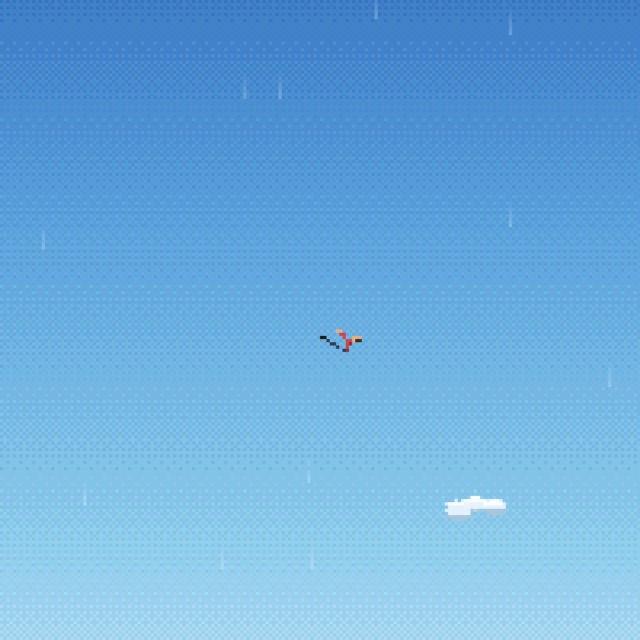
💧 Skyfall — pixel art 2026
Hand-plotted into a 200×300 pixel buffer. Splash, then a slow-motion sink into the dark.
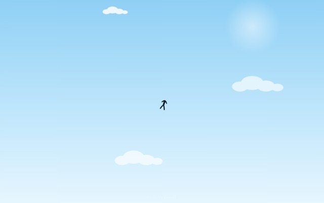
🌊 Freefall — smooth vector 2026
The same scene with the pixels taken away. The control, for comparison.
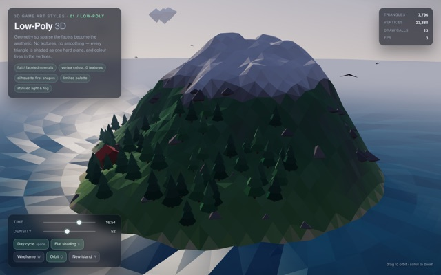
🏝️ Low-Poly Island 2026
WebGL2 art-style study — flip flat/smooth normals and wireframe to see why the style works.
Jujutsu Kaisen — Cursed Cuts
Crude canvas animations made solely for learning Claude — kept for the record, not for the art.
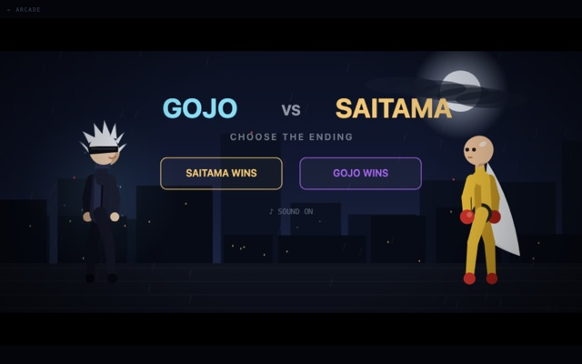
⚔️ Gojo vs Saitama learning exercise
A rough choreographed brawl with camera cuts and two endings. Sound on.
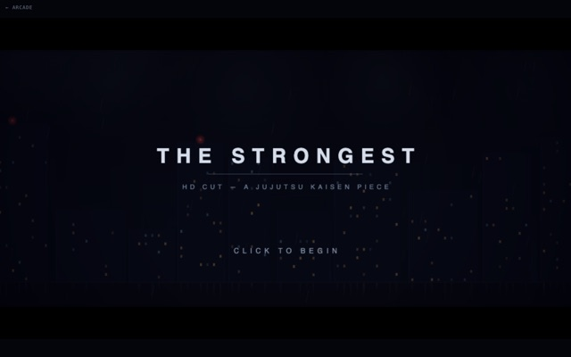
🌀 The Strongest — HD Cut learning exercise
Gojo's Shibuya drop, vector-drawn frame by frame. "Nah, I'd win."
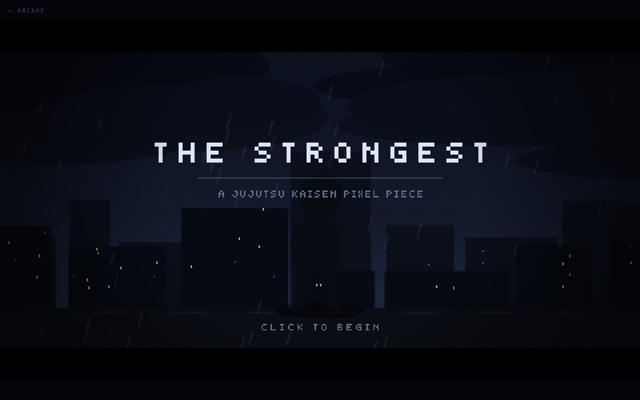
👁️ The Strongest — Pixel Cut learning exercise
The same drop as an 8-bit sprite piece with a synth boom.
Observatory
Less game, more looking at the world.
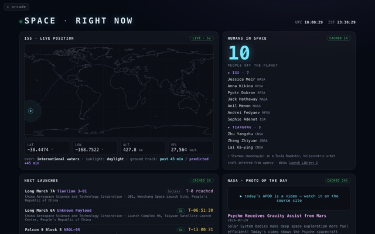
Space Right Now 2026
Live orbital dashboard — where the ISS is this second.
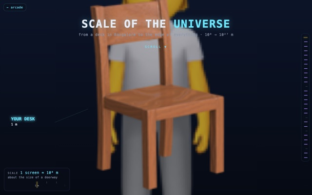
Scale of the Universe 2026
Scroll from a Bangalore desk to the edge of everything.
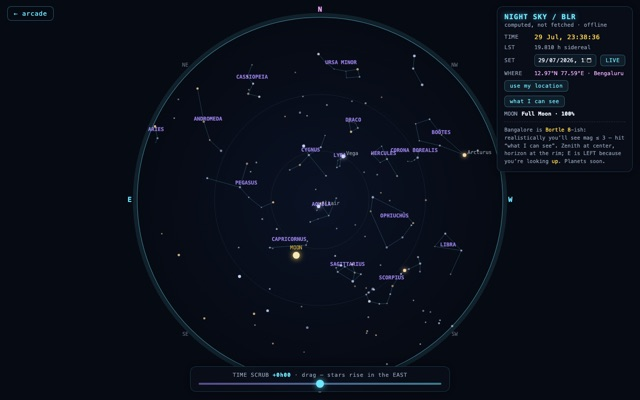
Night Sky over Bangalore 2026
Tonight's stars, computed not fetched.

tracka·packet 2026
Real traceroutes riding real submarine cables — where packets actually go.

The Slow Decay of Democracy 2026
Can democratic erosion be detected in data? A calibrated detector, pointed at India.
Retro Corner
Early builds, preserved in amber. They still work — that's the charm.

Countdown to 2027 2023 →
Born as a countdown to 2024. It made it — so now it counts to 2027 and runs a 30-day build sprint on the side.
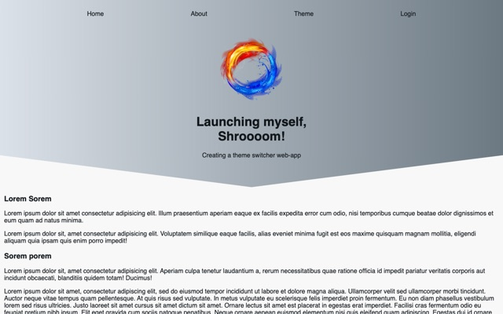
Theme Switcher 2023
One button, two themes. Peak minimalism before it was a design philosophy.
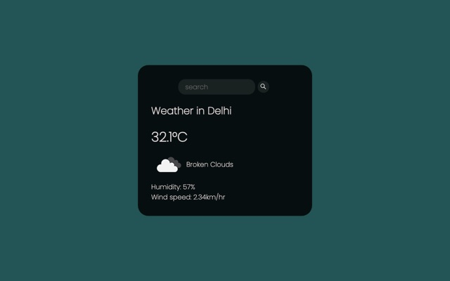
Weather App 2022
My first deploy ever. One search box, one API call, unreasonable pride.
Bonus Stage
Not games — but live, and occasionally useful.